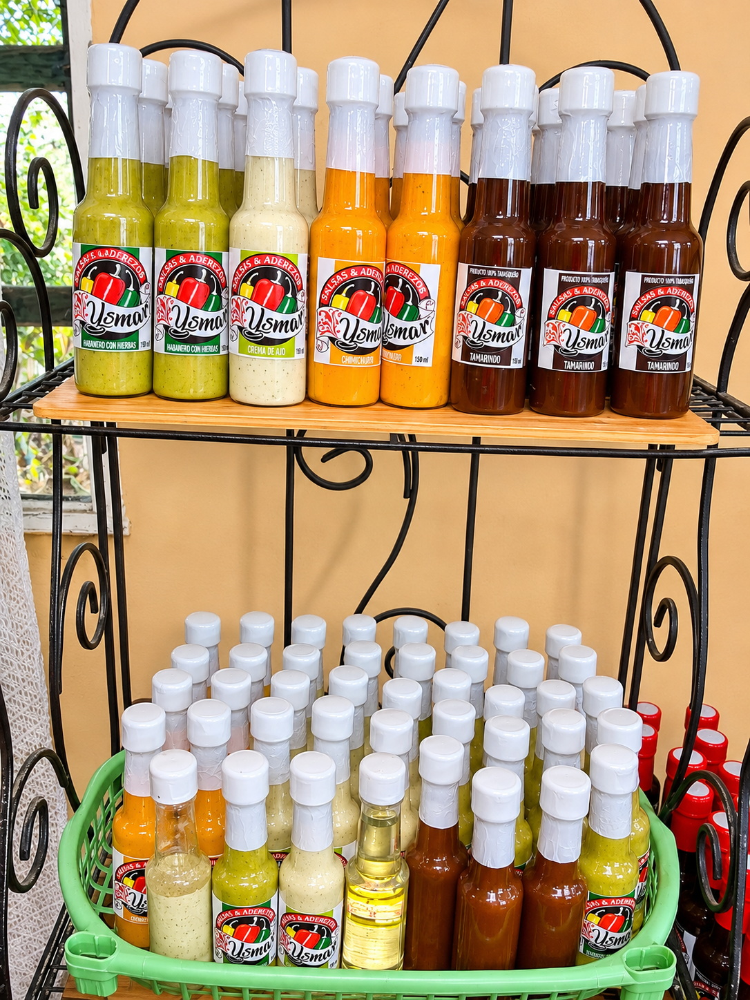

Acerca de nosotros
Te contamos un poco sobre nuestra historia y lo que nos motiva a seguir creciendo.
Nuestra Historia
Todo comenzó en la cocina de nuestra casa en Comalcalco, Tabasco. Lo que inició como una receta familiar secreta para acompañar nuestras propias parrilladas y comidas dominicales, pronto se convirtió en el antojo de amigos y vecinos. Así nació Salsas Ysmar: del deseo de compartir el verdadero sabor de hogar con muchas más personas.
Elaboración 100% Artesanal
En un mundo lleno de productos ultraprocesados, nosotros elegimos el camino tradicional. Creemos firmemente en el valor de lo hecho a mano. No utilizamos procesos industriales ni conservadores artificiales que apaguen el sabor de nuestros ingredientes.
Cada chile habanero, cada diente de ajo y cada vaina de tamarindo son seleccionados cuidadosamente en mercados locales. Tatemamos, licuamos y envasamos cada frasco con la misma dedicación y cariño que le pondríamos a la comida de nuestra propia familia. Ese es nuestro secreto: no hacemos salsa, envasamos tradición.
